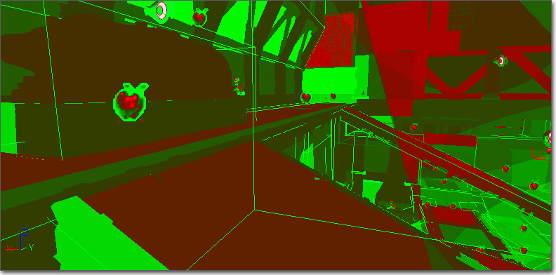
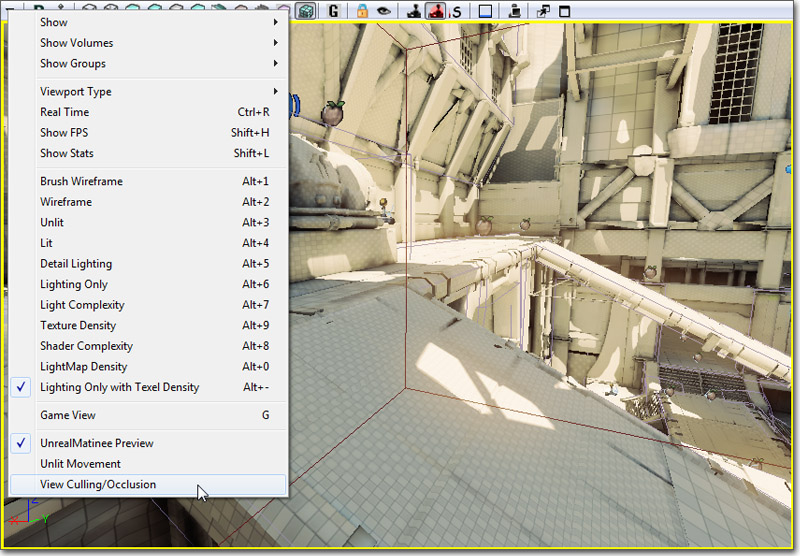
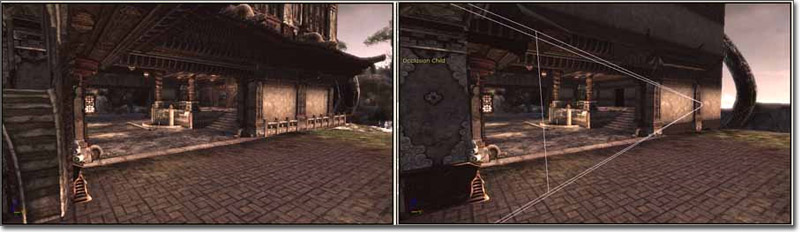

UDN
Search public documentation:
ViewModesCH
English Translation
日本語訳
한국어
Interested in the Unreal Engine?
Visit the Unreal Technology site.
Looking for jobs and company info?
Check out the Epic games site.
Questions about support via UDN?
Contact the UDN Staff
日本語訳
한국어
Interested in the Unreal Engine?
Visit the Unreal Technology site.
Looking for jobs and company info?
Check out the Epic games site.
Questions about support via UDN?
Contact the UDN Staff
视图模式
概述
viewmode（视图模式） 控制台命令改变视图模式。

支持的平台
模式
Wireframe(线框)
这个模式显示了所有网格物体的线框。 Command(命令):viewmode wireframe

Brush Wireframe(画刷线框)
这个模式显示了 actor 和 CSG 画刷的线框。隐藏 BSP 线框。这个模式仅在编辑器中有效。
Unlit(无光照模式)
这个模式显示了每个网格物体所使用的材质的漫反射通道。 Command(命令):viewmode unlit

Lit(带光照模式)
这个模式显示了每个网格物体所示用的材质在受到光照影响时的样子。它是游戏中的默认模式。 Command(命令):viewmode lit

Detail Lighting(细节光照)
这个模式显示了网格物体的中性色材质受到法线光照影响时的效果。 Command(命令):viewmode detaillighting

Lighting Only(纯光照模式)
这个模式显示了网格物体的中性色材质受到光照影响时的效果。 Command(命令):viewmode lightingonly

Light Complexity(光照复杂度)
这个模式基于影响网格物体的光源的数量来把网格物体显示为纯色。 Command(命令):viewmode lightcomplexity
在 viewmode lightcomplexity 中的网格物体着色说明了影响网格物体的光源的数量，这些光源不是天空光源和光照贴图，根据以下机制进行定义（在 YourGameEngine.ini 中进行定义）：
#光源数量： 网格物体颜色0: (R=0,G=0,B=0,A=1)
1: (R=0,G=255,B=0,A=1)
2: (R=63,G=191,B=0,A=1)
3: (R=127,G=127,B=0,A=1)
4: (R=191,G=63,B=0,A=1)
5: (R=255,G=0,B=0,A=1)
注意，在游戏中看到光照复杂度是很重要的，因为大多数动态光源都是在游戏播放过程中产生的（比如枪口的火焰、爆炸等等）。

Texture Density(贴图密度)
这个视图模式用于做以下两件事：- 用于检查您是否把高分辨率贴图应用在比较重要的表面上（比如，接近相机的部分而不是房屋顶部的部分）。
- 检查您是否把高分辨率贴图放置在低分辨率贴图的旁边（产生非常明显的贴图分辨率对比），这样看上效果将很不好。
viewmode texturedensity

Shader Complexity(着色器复杂度)
Shader Complexity（着色器复杂度）模式使您可以可视化地查看每个像素上执行多少像素着色器命令。总的复杂度是用于渲染发射性物质和每次光照渲染、半透明、变形以及雾体积所使用的指令的总和。注意，高空雾、后期处理和其它特效所使用的指令不计算在内。然后最终累加后的指令数对消耗最小的像素映射为从浅绿色到深绿色，对指令数为 300 的像素映射为从深红色到浅红色。2009 年 9 月（还没有发行）的 QA 版本将会有一个扩展范围，即粉色意味着指令数为 600，白色意味着 900 个着色器指令。自从该 QA 版本后，遮罩材质的表现形式也会更加精确。 仅使用指令数量来计算着色器复杂度，可能并不总是那么准确。比如，一个具有 16 个指令的着色器，查找所有贴图，那么在所有平台上，这将会比具有 16 个数学指令的着色器要慢很多。而且包含死循环的着色器将不能通过指令数量进行精确地展现，这对于顶点着色器来说是一个主要问题。但总的来说，指令数量在大多数情况下下都是一个很好的测量标准。 使用着色器复杂度时需要注意的事项：- 请一定要在编辑器和游戏（或 PIE）中都查看您关卡的着色器复杂度。这允许您确定这个关卡的性能消耗太昂贵还是游戏性元素比如动态产生的特效光源导致了较低的性能。
- 静态光源的任何东西都应该是绿色的，因为仅自发光和光照贴图条件用于渲染这些物体，所以它们的性能消耗是非常低的。如果静态物体意味地呈现为红色，请确保您是否已经重新构建了您的光照。
- 地形通常是红色，即使重新构建了光照，因为组合的地形材质的性能消耗是如此昂贵。确保每个层的材质尽可能地简单是非常重要的，因为地形通常具有很多像素。
- 由于大量的粒子描画，粒子系统通常是红色的（甚至更糟糕）。
viewmode shadercomplexity

Lightmap Density(光照贴图密度)
这个模式显示了映射了贴图的物体的光照贴图密度，根据它们和 理想/最大 密度设置的关系进行颜色编码，然后显示一个和实际光照贴图像素相映射的网格。 当在颜色模式时：- 蓝色代表低于理想贴图像素密度
- 绿色代表理想贴图像素密度
- 红色代表最大或非常大的贴图像素密度
- MinLightMapDensity（最小光照贴图密度）=0.0
- IdealLightMapDensity（理想光照贴图密度）=1.0
- MaxLightMapDensity（最大光照贴图密度）=3.0
viewmode lightmapdensity

Lit Lightmap Density(带光照的光照贴图密度)
这个模式和‘纯光照模式’类似，但是被贴图映射的物体也将显示一个映射到光照贴图像素的网格。 Command(命令):viewmode litlightmapdensity

仅用于编辑器的模式
属性着色
这个模式允许显示具有特定属性值的 actor。通过在属性窗口的属性上点击 shift 键，标记属性。然后，在编辑器视口中启用 Property Coloration（属性着色） 显示标志，则具有相同属性值的那种类型的所有物体将显示为红色。具有相同属性值的对象还可以通过右击菜单选择。 当前，属性比较很精确。例如，认为亮度为 1.0 的光源与亮度为 1.001 的光源具有不同的属性值。遮挡预览
这个模式启用了引擎的平头截体剔除和遮挡的可见性。通过在透视图级别视窗的视窗工具栏的 Viewport Options（视图选项）下拉菜单中选择 View Culling/Occlusion（视图剔除/遮挡） 激活它。
当启用 Occlusion Preview（遮挡预览）模式时，其它的视窗被认为是 occlusion children（遮挡子项） ，在那些视窗中将进渲染在 occlusion parent（遮挡父项） 视图中所渲染的东西。 这个视图对于接触线框视图的混乱是有用的，同时也可以用于预览遮挡（例如： 决定了对于特定视图引擎到底需要描画哪些东西）。 在以下了图片中，左侧的图片 禁用 了遮挡视图模式而右侧 启用 了该模式，这里对其中一个正交视口的图片在启用该模式 前/后 进行了对比。粉色的线框显示了 遮挡父项 视口在世界中的位置。 以下是将 子 视口设置为透视视图并将其移动到另一个位置时的 前/后 对比图片。
以下是将 子 视口设置为透视视图并将其移动到另一个位置时的 前/后 对比图片。
